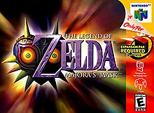

The Legend of Zelda: Majora's Mask is the sixth Legend of Zelda game made. It was released in the US on October 26, 2000. It was originaly for the N64, but has also been made for the GameCube and 3DS.

the legend of
Zelda majora's maskThe Legend of Zelda: Majora's Mask is the sixth Legend of Zelda game made. It was released in the US on October 26, 2000. It was originaly for the N64, but has also been made for the GameCube and 3DS.